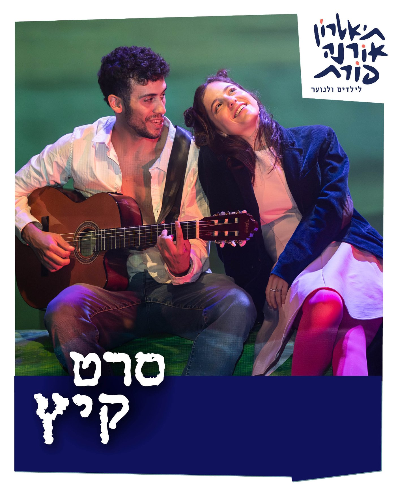
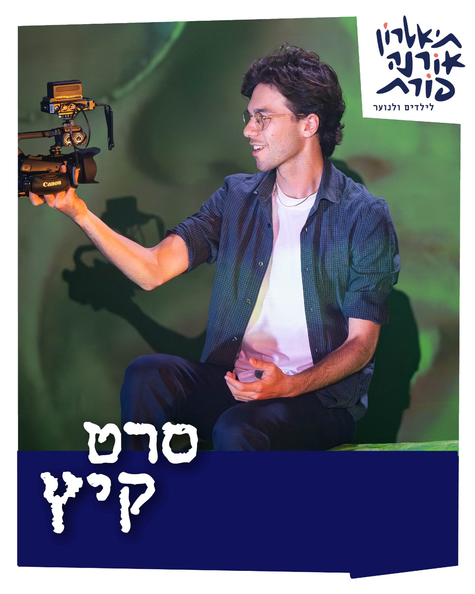
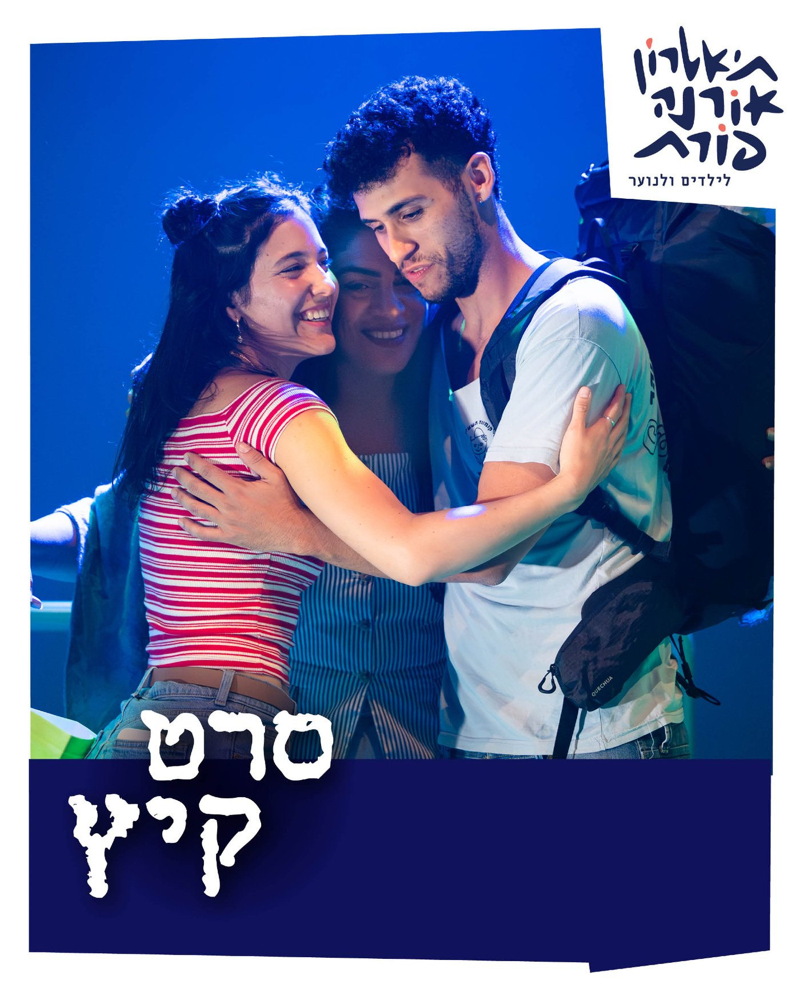
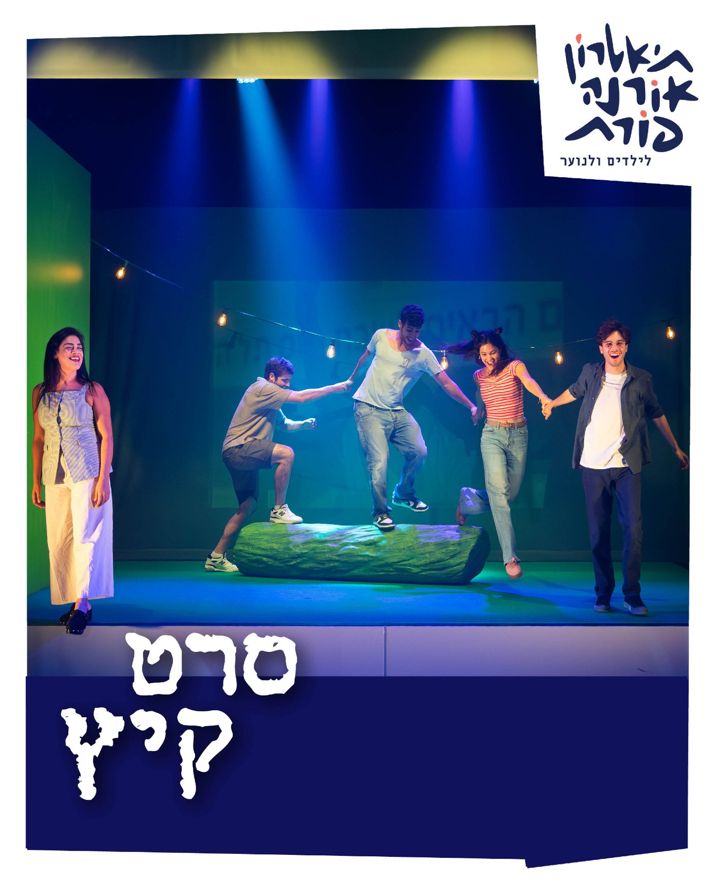
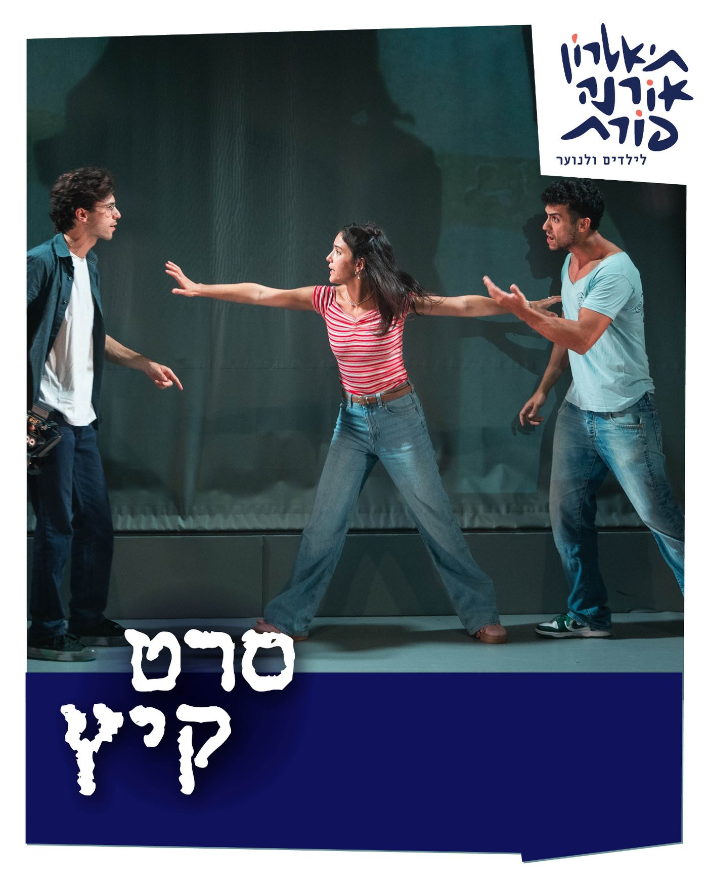
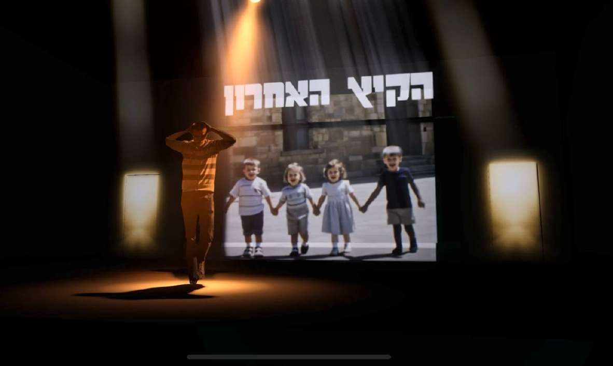

תקציר
דרמת התבגרות על הקיץ האחרון שלפני הגיוס של ארבעה חברים — ג'וני, אריקה, יפתח ושירה. ג'וני אינו נפרד ממצלמת הווידאו ומתעד הכול — אהבה, ריבים, פחדים וחלומות. בתוך מערבולת הקיץ הזה הם לומדים את השיעור החשוב מכולם: גם כששבר משהו, חברות אמת תמיד מוצאת דרך חזרה.
צוות
- בימוי: עמית אפשטיין
- עיצוב וידאו: ניק דריידן
- בכורה: 21 בספטמבר 2025, פסטיבל ירון, תל אביב
קונספט חזותי
בהפקה המכוונת לדור ה־Z ממלא הווידאו תפקיד מרכזי: מצלמה אמיתית משדרת בלייב את "סרט הוולוג" של ג'וני אל מסך הרקע, והקהל רואה בו־זמנית את הסצנה המתרחשת ואת תיעודה — מטפורה עוצמתית לנוער הצופה בחייו כבסרט. זיכרונות ילדות עלו כקטעי הום־וידאו והקרנות רטרו במרקם VHS של שנות התשעים; האסתטיקה העניקה למופע דופק של קליפ; וגרפיקת AI עדינה חתמה בנקודה פואטית — בפינאלה ממזגת הרשת הנוירונית את פני החברים לסלפי משותף אחד.
גלריה





